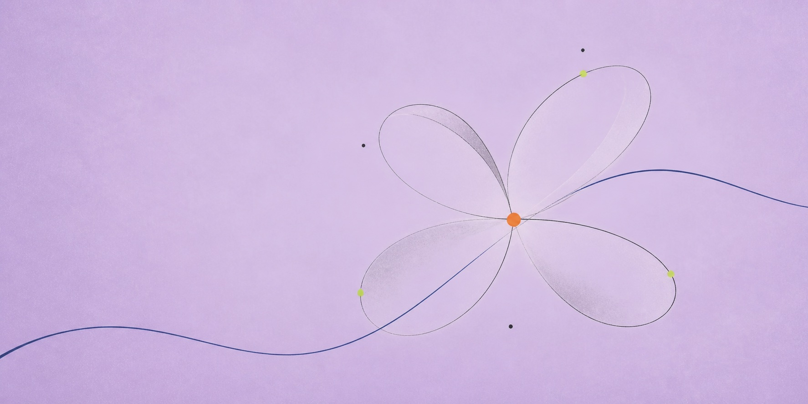
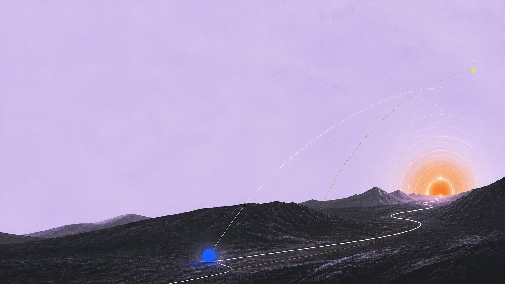
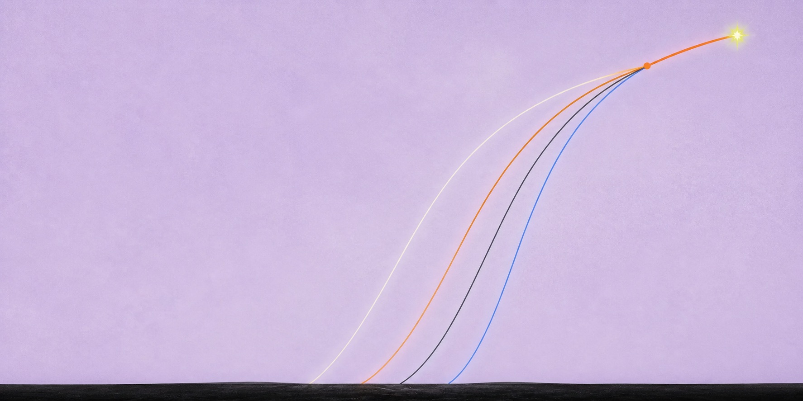
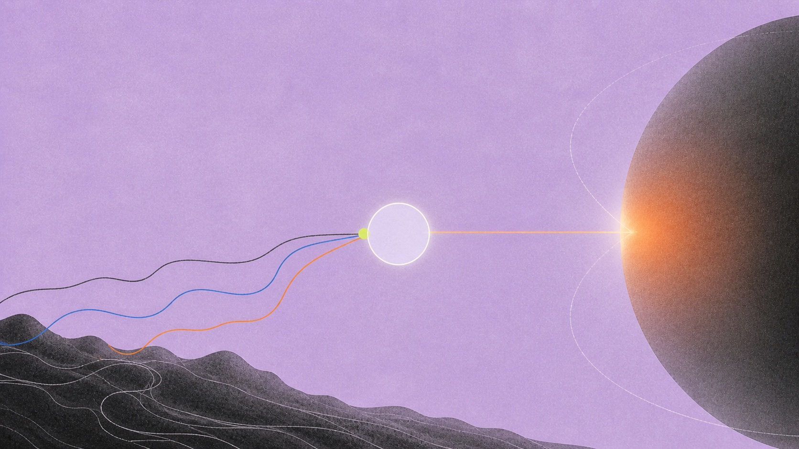
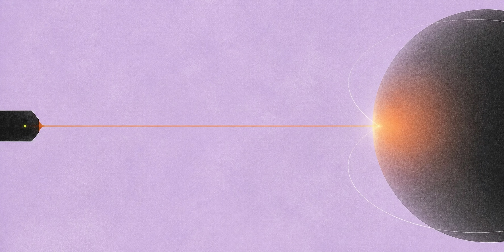

<!doctype html>
<html lang="en">
<head>
  <meta charset="utf-8">
  <meta name="viewport" content="width=device-width, initial-scale=1">
  <meta name="theme-color" content="#e5d5f1">
  <title>Kram.bio — Mark Murdock</title>
  <meta name="description" content="Mark Murdock—Kram to most people. Writing, work, and things worth returning to.">
  <link rel="canonical" href="https://kram.bio/">
  <meta property="og:title" content="Kram.bio — Mark Murdock">
  <meta property="og:description" content="Writing, work, and things worth returning to.">
  <meta property="og:url" content="https://kram.bio/">
  <meta property="og:type" content="website">
  <link rel="preload" href="home-arrival-v1.jpg" as="image">
  <style>
    html, body { width: 100%; min-height: 100%; margin: 0; background: #e5d5f1; }
    #knm-preview { width: 100%; height: 100svh; display: block; border: 0; visibility: hidden; background: #e5d5f1; }
  </style>
</head>
<body>
  <iframe id="knm-preview" title="Kram.bio"></iframe>
  <script>
    (() => {
      const pages = new Set(["home", "writing", "about", "inbox"]);
      const frame = document.querySelector("#knm-preview");
      const requested = location.hash.slice(1);
      const initialPage = requested === "media" ? "writing" : (pages.has(requested) ? requested : "home");
      if (requested === "media") history.replaceState(null, "", `${location.pathname}${location.search}#writing`);
      frame.src = `site-core.html${initialPage === "home" ? "" : `#${initialPage}`}`;

      const scene = (name, inner = "") => `<div class="knm-scene knm-scene-${name}" aria-hidden="true">${inner}</div>`;

      frame.addEventListener("load", () => {
        const doc = frame.contentDocument;
        const win = frame.contentWindow;
        if (!doc || !win) return;

        doc.documentElement.classList.add("knm-visual");
        const stylesheet = doc.createElement("link");
        stylesheet.rel = "stylesheet";
        stylesheet.href = "site.css";
        doc.head.appendChild(stylesheet);

        const pointLink = (link, page, label) => {
          if (!link) return;
          link.href = `#${page}`;
          link.setAttribute("data-site-page", page);
          if (label) link.textContent = label;
        };

        /* Identity and information architecture. */
        const homeTitle = doc.querySelector(".kram-home-copy h1");
        if (homeTitle) {
          homeTitle.textContent = "KRAM";
        }
        const homeIdentity = doc.querySelector(".kram-home-identity");
        if (homeIdentity) homeIdentity.innerHTML = `I'm <a href="https://www.linkedin.com/in/mark-murdock-/" target="_blank" rel="noopener">Mark Murdock</a> but most people call me...`;
        const homeCredo = doc.querySelector(".kram-home-copy > p:not(.kram-home-identity)");
        if (homeCredo) homeCredo.textContent = "my favorite thing is doing something for the first time.";

        const headerWriting = doc.querySelector('.kram-site-head nav [data-site-page="writing"]');
        const headerAbout = doc.querySelector('.kram-site-head nav [data-site-page="about"]');
        pointLink(headerWriting, "writing", "archive");
        doc.querySelector('.kram-site-head nav [data-site-page="media"]')?.remove();
        if (headerWriting && headerAbout) headerWriting.before(headerAbout);

        const doors = [...doc.querySelectorAll(".kram-doors a")];
        pointLink(doors[0], "about");
        if (doors[0]) doors[0].querySelector("strong").textContent = "about me";
        pointLink(doors[1], "writing");
        if (doors[1]) doors[1].querySelector("strong").textContent = "archive";
        pointLink(doors[2], "inbox");
        if (doors[2]) doors[2].querySelector("strong").textContent = "inbox";

        /* Archive: writing with a reason to click, then the full library. */
        const writingView = doc.querySelector('[data-site-view="writing"]');
        const writingTitle = writingView?.querySelector(".kram-page-head h1");
        if (writingTitle) writingTitle.textContent = "archive";

        const writingQuotes = new Map([
          ["The Manifest Destiny of Space", "Optimism sees space not as a void, but a canvas."],
          ["Unreality Reigns", "When I stop to think about how odd the world is, I can do nothing but describe it as an unreality."],
          ["Crete", "It is weird how information seems to flow through my life like water over rock."],
          ["Two Weeks in Liberia", "What followed changed my mind in ways I did not expect."]
        ]);
        const writingGlyphs = new Map([
          ["The Manifest Destiny of Space", `<svg class="knm-writing-glyph" viewBox="0 0 54 54" aria-hidden="true"><circle class="knm-glyph-fill" cx="27" cy="27" r="10"/><ellipse cx="27" cy="27" rx="23" ry="10" transform="rotate(-18 27 27)"/><circle class="knm-glyph-dot" cx="47" cy="20" r="2.5"/></svg>`],
          ["Unreality Reigns", `<svg class="knm-writing-glyph" viewBox="0 0 54 54" aria-hidden="true"><path d="M8 31 C8 11 29 10 31 26 C33 43 50 40 48 21"/><path d="M7 22 C18 42 35 41 46 15"/><circle class="knm-glyph-dot" cx="32" cy="27" r="2.5"/></svg>`],
          ["Crete", `<svg class="knm-writing-glyph" viewBox="0 0 54 54" aria-hidden="true"><path d="M3 43 L13 34 L21 39 L30 22 L39 35 L51 27"/><path d="M3 43 H51"/><circle class="knm-glyph-sun" cx="40" cy="13" r="5"/></svg>`],
          ["Two Weeks in Liberia", `<svg class="knm-writing-glyph" viewBox="0 0 54 54" aria-hidden="true"><path d="M7 48 C9 35 27 40 23 27 C19 15 39 20 45 6"/><circle cx="7" cy="48" r="2"/><circle class="knm-glyph-dot" cx="45" cy="6" r="3"/></svg>`]
        ]);
        writingView?.querySelectorAll(".kram-work-index a").forEach((link) => {
          const title = link.querySelector("strong")?.textContent.trim();
          if (title === "The Manifest Destiny of Space") {
            link.href = "https://kramnotmark.substack.com/p/da-optimistic-space-time-continuum";
          }
          const quote = writingQuotes.get(title);
          const glyph = writingGlyphs.get(title);
          if (glyph) link.insertAdjacentHTML("afterbegin", glyph);
          if (quote) link.insertAdjacentHTML("beforeend", `<q class="knm-writing-quote">${quote}</q>`);
        });

        const mediaView = doc.querySelector('[data-site-view="media"]');
        const mediaExplorer = mediaView?.querySelector(".kram-media-explorer");
        const mediaInbox = mediaView?.querySelector(".kram-inbox-line");
        const professionalWriting = writingView?.querySelector(".kram-professional-writing");
        if (writingView && mediaExplorer && professionalWriting) {
          const recommendations = doc.createElement("section");
          recommendations.className = "knm-archive-recommendations";
          recommendations.setAttribute("aria-labelledby", "knm-recommendations-title");
          recommendations.innerHTML = `
            <div class="knm-archive-recommendations-art">
              
              <div class="knm-recommendations-copy">
                <span id="knm-recommendations-title">things worth returning to</span>
                <p>Films, books, songs, essays, and esoteric PDFs I've saved and liked over the years.</p>
              </div>
            </div>`;
          recommendations.appendChild(mediaExplorer);
          if (mediaInbox) recommendations.appendChild(mediaInbox);
          professionalWriting.before(recommendations);
        }
        mediaView?.remove();

        doc.querySelectorAll('[data-site-page="media"]').forEach((link) => pointLink(link, "writing"));

        const homeHero = doc.querySelector(".kram-home-hero");
        homeHero?.insertAdjacentHTML("beforeend", scene("home", `
          
          <span class="knm-home-glow"></span>
        `));

        doc.querySelector(".kram-page-head-writing")?.insertAdjacentHTML("beforeend", scene("writing", `
          
        `));

        doc.querySelector(".kram-page-head-about")?.insertAdjacentHTML("beforeend", scene("about", `
          <picture>
            <source media="(max-width: 760px)" srcset="about-relay-mobile-v2.jpg">
            
          </picture>
        `));

        /* About: identity, path, work that shipped, and what is next. */
        const aboutView = doc.querySelector('[data-site-view="about"]');
        const aboutHead = aboutView?.querySelector(".kram-page-head-about");
        const aboutIntro = aboutView?.querySelector(".kram-about-intro");
        const aboutPath = aboutIntro?.querySelector(".kram-about-path");
        const interests = aboutIntro?.querySelector(".kram-about-interests");
        const receipts = aboutView?.querySelector(".kram-receipts");
        const nowStrip = aboutView?.querySelector(".kram-now-strip");
        const fragment = aboutView?.querySelector(".kram-personal-fragment");

        if (aboutHead) {
          const eyebrow = aboutHead.querySelector("h1");
          if (eyebrow) eyebrow.textContent = "ABOUT";
          aboutHead.insertAdjacentHTML("afterend", `<p class="knm-about-hero-statement">I'm a generalist across editorial, comms, social, product, and growth.</p>`);

          const avatar = aboutHead.querySelector(".kram-about-avatar");
          const avatarImage = avatar?.querySelector("img");
          if (avatar && avatarImage) {
            const avatarLink = doc.createElement("a");
            avatarLink.href = "https://www.linkedin.com/in/mark-murdock-/";
            avatarLink.target = "_blank";
            avatarLink.rel = "noopener";
            avatarLink.setAttribute("aria-label", "Mark Murdock on LinkedIn");
            avatarImage.before(avatarLink);
            avatarLink.appendChild(avatarImage);
          }
        }
        aboutIntro?.querySelector(".kram-about-lede")?.remove();
        if (aboutPath) {
          aboutPath.innerHTML = `I'm semi-available for positioning, launches, and narrative work through <a href="https://aurient.ai/" target="_blank" rel="noopener">Aurient</a> with <a href="https://www.emmajoelle.com/" target="_blank" rel="noopener">Emma</a>.`;
          const currentCopy = doc.createElement("div");
          currentCopy.className = "knm-about-current-copy";
          aboutPath.before(currentCopy);
          currentCopy.appendChild(aboutPath);
          currentCopy.insertAdjacentHTML("beforeend", `<a class="knm-work-with-us" href="https://aurient.ai/" target="_blank" rel="noopener">WORK WITH US →</a>`);
          currentCopy.insertAdjacentHTML("afterend", `
            <div class="knm-belief-field" aria-labelledby="knm-belief-title">
              <span class="knm-belief-label" id="knm-belief-title">IN GENERAL, I BELIEVE…</span>
              <svg class="knm-belief-path" viewBox="0 0 620 430" aria-hidden="true"><path d="M28 368 C126 350 117 104 253 132 C366 155 333 355 451 301 C534 263 515 112 598 52"/></svg>
              <ol>
                <li class="belief-friendship">friendship is the most important salve for scrolling.</li>
                <li class="belief-life">life should be lived as if you get one shot at it.</li>
                <li class="belief-romance">grand romance is alive and well—and should be more consistently espoused.</li>
                <li class="belief-flatcoin">fiat will eventually be replaced by an algorithmic flatcoin.</li>
                <li class="belief-terraforming">terraforming is probably the most interesting research frontier.</li>
              </ol>
            </div>`);
        }
        interests?.remove();

        if (receipts) {
          receipts.innerHTML = `
            <span class="kram-receipt-heading">EXPERIENCE</span>
            <p class="knm-experience-intro">Six years in crypto—editorial, product launches, and narrative.</p>
            <div class="knm-career-relay">
              <article class="knm-career-node knm-layerzero-node">
                <a class="knm-career-name" href="https://x.com/kramnotmark/status/2088356758083514494" target="_blank" rel="noopener">LAYERZERO ↗</a>
                <p>Led narrative, comms + social across products, launches, and crises.</p>
                <div class="knm-career-satellites" aria-label="Selected LayerZero launches">
                  <a href="https://fortune.com/2026/02/10/layerzero-blockchain-ark-citadel-cathie-wood-nyse-dtcc-ice-tokenization-crypto/" target="_blank" rel="noopener"><span>ZERO</span><strong>Citadel · DTCC · ICE · Google Cloud · a16z</strong></a>
                  <a href="https://stargate.discourse.group/t/layerzero-foundation-acquisition-of-stargate-stg/682" target="_blank" rel="noopener"><span>STARGATE</span><strong>$110M DAO acquisition</strong></a>
                  <a href="https://layerzero.network/blog/the-zro-token" target="_blank" rel="noopener"><span>ZRO</span><strong>~$5B token launch</strong></a>
                  <a href="https://layerzero.network/blog/layerzero-v2-deep-dive" target="_blank" rel="noopener"><span>V2</span><strong>product narrative + launch comms</strong></a>
                </div>
              </article>
              <article class="knm-career-node">
                <a class="knm-career-name" href="https://blog.li.fi/jumper-cryptos-everything-exchange-fa5611abccd1" target="_blank" rel="noopener">JUMPER ↗</a>
                <p>Positioning + launch GTM for crypto's everything exchange.</p>
              </article>
              <article class="knm-career-node">
                <a class="knm-career-name" href="https://unchainedcrypto.com/author/mmurdock/" target="_blank" rel="noopener">UNCHAINED ↗</a>
                <p>Wrote a newsletter a day, built it to 10k subscribers, and ran social.</p>
              </article>
            </div>`;
        }

        if (aboutView && receipts) {
          const now = doc.createElement("section");
          now.className = "knm-about-now";
          now.innerHTML = `
            <p>I also write <a href="https://kramnotmark.substack.com/about" target="_blank" rel="noopener">Kram Not Mark</a>.</p>
            <span class="knm-interests-label">INTERESTS</span>
            <p class="knm-about-interests">reading · travel · biotech · crypto · nuclear · space · <em>sunglasses</em></p>
            <a class="knm-about-archive-link" href="#writing" data-site-page="writing">EXPLORE THE ARCHIVE →</a>`;
          receipts.insertAdjacentElement("afterend", now);
        }
        nowStrip?.remove();
        fragment?.remove();

        doc.querySelector(".kram-inbox-visual")?.insertAdjacentHTML("beforeend", scene("inbox", `
          
        `));

        doc.addEventListener("click", (event) => {
          const link = event.target.closest?.("[data-site-page]");
          if (!link) return;
          const page = link.getAttribute("data-site-page") || "home";
          window.setTimeout(() => {
            history.replaceState(null, "", page === "home" ? location.pathname + location.search : `#${page}`);
          }, 0);
        }, true);

        win.addEventListener("popstate", () => {
          const page = win.location.hash.slice(1) || "home";
          history.replaceState(null, "", page === "home" ? location.pathname + location.search : `#${page}`);
        });

        stylesheet.addEventListener("load", () => { frame.style.visibility = "visible"; });
        window.setTimeout(() => { frame.style.visibility = "visible"; }, 800);
      });

      window.addEventListener("hashchange", () => {
        const requestedPage = location.hash.slice(1);
        const page = requestedPage === "media" ? "writing" : (pages.has(requestedPage) ? requestedPage : "home");
        if (!frame.contentWindow) return;
        frame.contentWindow.location.hash = page === "home" ? "" : page;
      });
    })();
  </script>
</body>
</html>
